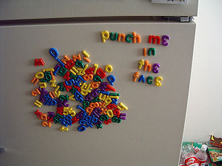
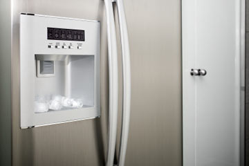
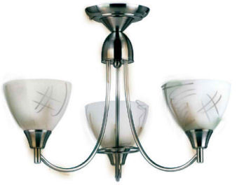
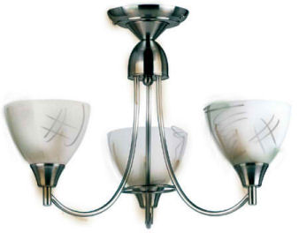

A Fridge's Life ...
Being from the '70's was a tough thing to crack; Fridge was always a little older than most other appliances in the house. They were all youngins' and made a lot of noise during the day, but generally Fridge's heat-exchanger drowned out Kettle and Toaster's chatter. He would stand there silently throughout the night beside the kitchen door awaiting dawn and the arrival of the morning milk.
He had been taken from his original owner, dear Mrs. Potters, by her ungrateful son and his wife when they decided to move to the city. The new house was usually very messy with clothes constantly being tossed on top of Fridge ...One day there was even a pair of shoes thrown at him!
One day another appliance began talking to Fridge. Mini-Fridge was genial and kind to Fridge but soon disappeared. Fridge became depressed and soon stopped making ice-cubes. He even stopped talking to Toaster and Kettle ...He grew accustomed to the wall at his back and the opening and closing of the door without Mini-Fridge ever appearing. Then Mini-Fridge came in one day covered in dust and leaves. Afterwards Mini-Fridge was cold.
 
"The house was a nightmare!!"


 
